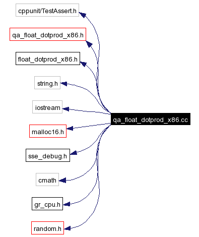

qa_float_dotprod_x86.cc File Reference
#include <cppunit/TestAssert.h>
#include <qa_float_dotprod_x86.h>
#include <float_dotprod_x86.h>
#include <string.h>
#include <iostream>
#include <malloc16.h>
#include <sse_debug.h>
#include <cmath>
#include <gr_cpu.h>
#include <random.h>
Include dependency graph for qa_float_dotprod_x86.cc:

Define Documentation
Function Documentation
| float ref_float_dotprod |
( |
const float * |
input, |
|
|
const float * |
taps, |
|
|
unsigned |
n_4_float_blocks |
|
) |
|
|
Generated on Mon Oct 11 07:42:16 2004 for GNU Radio 2.x by
 1.3.3
1.3.3